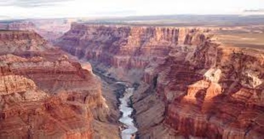

Grand Canyon
"Grand" doesn't begin to do this canyon justice. Measuring approximately 277 river miles in length, up to 18 miles in width and a mile deep, this massive chasm in northern Arizona is truly a natural wonder. For six million years, the Grand Canyon has expanded with the help of the mighty Colorado River, and for centuries, people from all over the globe have traveled to gaze out over its red and orange grandeur. Managed by the National Park Service and officially designated as a UNESCO World Heritage site, the Grand Canyon leaves its approximately 6 million visitors per year awestruck.